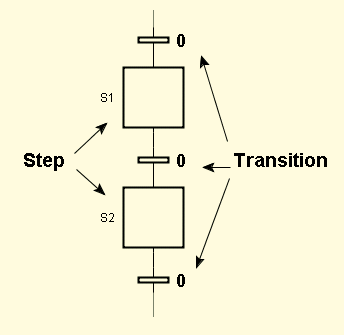

The graphical language of Grafchart is based on Grafcet/Sequential Function Charts (SFC). The language is state-transition oriented. A Grafchart program consists of a function chart that represents an activity flow. By convention the flow goes from the top of page to the bottom of page.
More formally a Grafcet function chart is a bipartite directed graph consisting of steps and transitions.

A step can either be active or inactive. An active step is indicated by a filled token.
Associated with the steps are actions. The actions are expressed in a textual action language. Actions can be performed when the step is activated, deactivated, aborted and/or periodically while the step is active.
The transitions have an associated boolean condition that acts as a guard. A transition is enabled if all immediately preceding steps are active. An enabled transition fires if its condition is true.